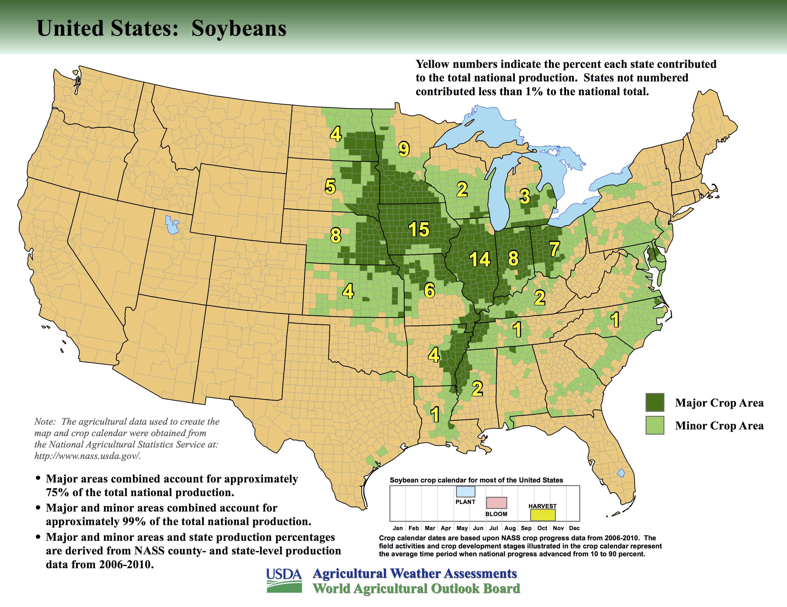
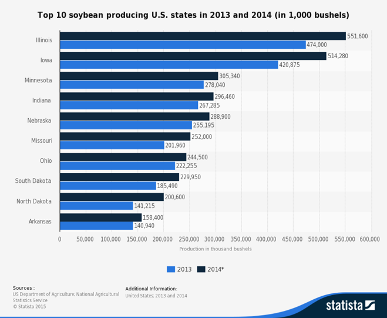
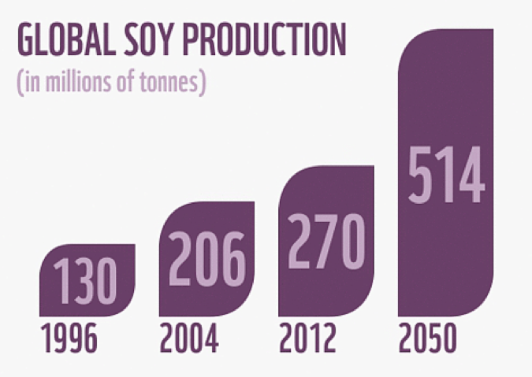
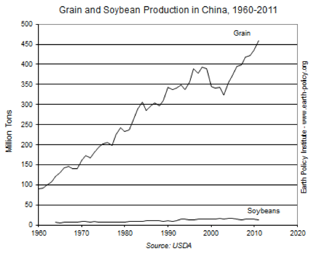

U.S. soybean production continues on an upward trend from the late 1900s to the present with production in 1980 as 49 million metric tons and production in 2013 as 89 million metric tons. Likewise, record highs in the harvested area and average yield per acre of soy have been established. The focus will be on geographic analysis of growth in soybean production. Geography plays a significant role in the production because the locale of production presents the environmental conditions necessary for the soy to grow. To assess the geography of soybean production, the localization of production and the beneficiaries of this growth are examined in the context of the modern food system.


Soybean production is localized in the Midwest region of the United States. The Midwest region is defined per U.S. Census Bureau as Illinois, Indiana, Iowa, Kansas, Michigan, Minnesota, Missouri, Nebraska, North Dakota, Ohio, South Dakota, and Wisconsin. The top soybean producing states from 2013-2015 have been Illinois, Iowa, Indiana, Minnesota, Nebraska, Missouri, Ohio, South Dakota, North Dakota, and Arkansas respectively. The soybean production in the U.S. in 2013 in 1,000 bushels was 3,357,984 and in 2014 was 3,968,823. The top soybean production states in the Midwest accounted for 72.5% in 2014 and for 72.9% in 2013. This begs the question: why has soybean production been highly concentrated in the Midwest region of the United States?
Interactive Map Placeholder Section
Sturdy Templates
Our templates are updated regularly so they don't break.
Ready to Ship
You can use this theme as is, or you can make changes!
Why is soybean production localized?
Two main aspects of the Midwest facilitate the concentration of soybean agriculture: namely soil and climate. The Midwest is characterized with one of the richest soils in the U.S. and a mild weather climate accompanying it. The mild weather is heavily influenced due to the proximity of the Great Lake Region to the Midwestern states, with many states in the Midwest bordering the Great Lakes. The Great Lakes region encompasses the U.S. states Illinois, Indiana, Michigan, Minnesota, New York, Ohio, Pennsylvania, and Wisconsin. As shown, six out of eight states in the Great Lake region are also in the Midwest region, and four out of the eight states are a part of the top soybean producing states. The Great Lakes function as heat sinks, which serve to moderate the temperature around the land encircling the Great Lakes by cooling the summer. The growing season for soy is generally late April to early May for planting soy and late September to the middle of November for harvesting soy. As such, the role of the Great Lakes as a heat sink complements the peak of the soy growing season, supplemented by the Great Lakes’ additional function as a humidifier continually increasing the moisture in the air. “Effects of Global Climate Change on Agriculture Great Lakes Region” by J.T. Ritchie, B.D. Baer, and T.Y. Chou utilizes two climate models Goddard Institute for Space Studies and Geophysical Fluid Dynamics Laboratory to assess yield and irrigation water demand under different weather scenarios focused on determining climate change effects on corn and soy production. The interpretation of the results indicate increases in temperature causes soy yield reduction because of decreased length of the growing season from shortened reproductive development period; with smaller temperature increases, the yield reduction would also decrease. Furthermore, the study reveals that climate change increases in temperature would shift the optimal harvested areas of soy production northward. Thus, the fertile soil of the Midwest region and the moderate temperature offer the conditions necessary for U.S. soy corporations to optimize their yield and continue to expand on that yield annually.
Why the increases in soybean acreage?
Generally, cropland has been increasingly partitioned into large and small farms with a growing loss of the mid-size farms. As such, production and acreage designated for crops have been fed into large farms. Cropland in U.S. states have seen changes as well where areas in states with more adjoining cropland, less dense populations, and high harvested cropland see rises in crop acreage. In particular, the states in the Corn Belt who utilize crop rotation of corn and soybeans observed more than 100% increases in midpoint acreage, midpoint farm size, from 1982-2007. On top of each state’s environment, soybeans have had a larger contributing role to the field crop cash receipt from 1950-2007. For example, soybeans were 5.4% of the 74.1% field crop cash receipt in 1950 and became 15.4% of the 63.2% field crop cash receipt in 2007, which is approximately a 17% increase in field crop revenue. As such, the increase in soybean acres remains a profitable means for soybean producing farms at the expense of other crops. The structural organization of farms supplemented the overall increase in cropland acreage designated for crop production with specialization in either livestock production or crop production, gradually occurring after the 1950s.
Who stands to gain from increases in soy production?
With increased expansion in the harvested acre and yield per acre of soy, it is necessary to understand who the beneficiaries are of this increase in production. Contrary to public opinion, the Agricultural Census in 2012 revealed the U.S. soy farming industry consisted of dominantly family owned farms, which were 83% of the soy producing farms while 7% of soy producing farms were owned by large corporations. Via the USDA in 2011, family-owned farms consisted of 97.2% of U.S. soybean producing farms with 94.8% of the value of soybean production, which gives insight into the corporate influence on soy production. It should also be known that family farms can be organized as corporations except large corporations; however 92.1% of family-owned farms were under sole proprietorship while only 3.1% were under corporation status in 2011. Prominent players such as Monsanto and DuPont, who are normally associated as dominant presences in the modern food system, play a small portion in the soy farming industry with a 2.4% estimated market share for Monsanto and 1.0% estimated market share for DuPont. These two corporations act as genetically modified primary soybean seed suppliers. The Supply Industries for U.S. Soy Farming who benefit are the Fertilizer Manufacturers, Biotechnology Corporations, Crop Services, Farm Product Storage and Warehousing, and Farm Equipment Wholesaling. The major players within each industry were Agrium Inc. and The Mosaic Company categorized under Fertilizer Manufacturers, Archer Daniels Midland Company and Cargill Inc. categorized under Farm Product Storage and Warehousing, and Gilead Sciences and Amgen Inc. categorized under Biotechnology. With the price of soybeans at $9.3575 per bushel and increased growth in the soybean industry, these supply industries are the first in lines to profit for increased soybean farming. Overall, the supply industries for soybean farming, family-owned farms, large corporation-owned farms, are the beneficiaries of increased soy production in the U.S. for the past years.
Soy Market on an International Scale


Besides the domestic demand of soy for soybean meal and soybean oil, the U.S. soy producing farms stand to gain with the U.S. as the second largest soybean exporter, contributing to 33% of the world’s soybean exports in 2014. The export market consists of China as 63% of the market share, Mexico as 7%, and Indonesia as 4%. While the production of soybeans in us is continuously increasing since 1990s, the percentage of US soybean production on a global scale is decreasing with countries, such as Brazil and Argentina, starting to compete as a soybean exporter. USDA show the data that more than 40 percent of the soybean is exported from the U.S and this number has increased from 40 percent in 2004 to 45 percent in 2015. China, as the biggest soybean importer of the U.S, plants relatively small amount of soybean domestically due to the soybean surplus in the U.S. In this case, soybean production shifts from domestic consumption to export due the urgent international soybean demand.